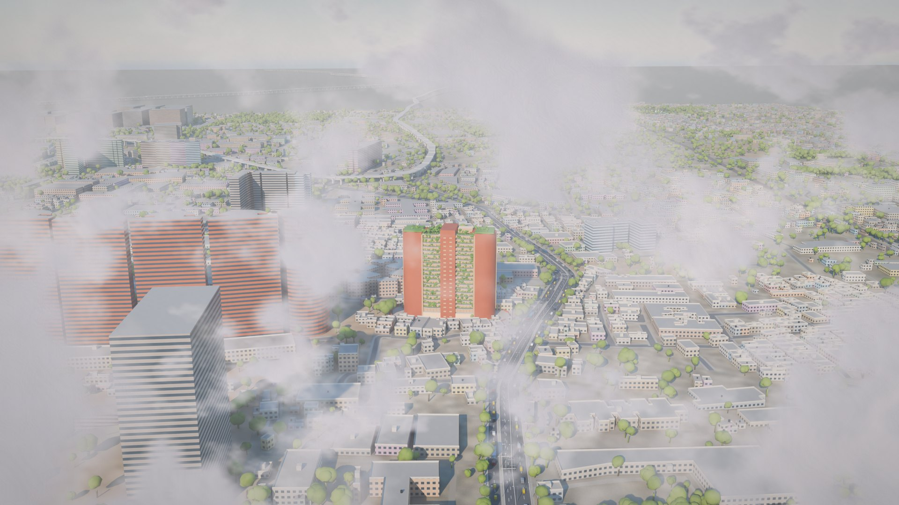
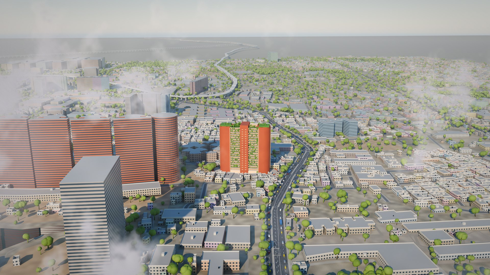
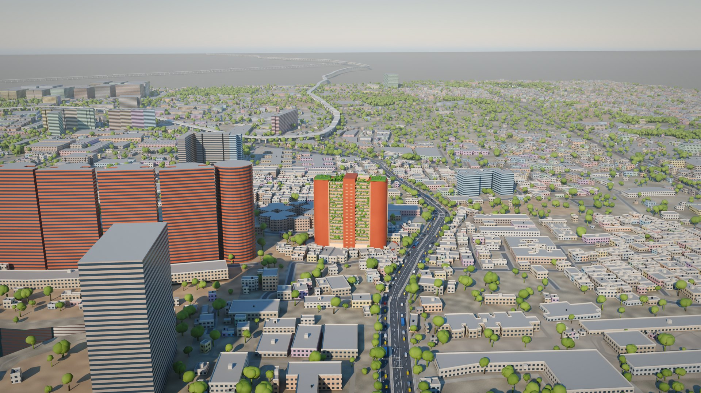
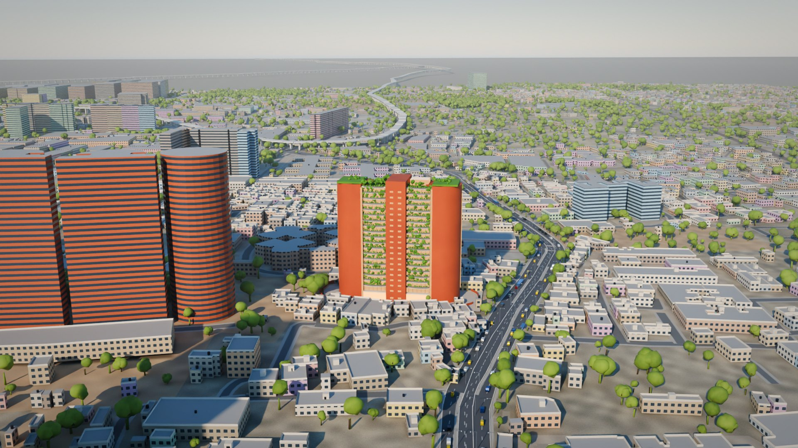
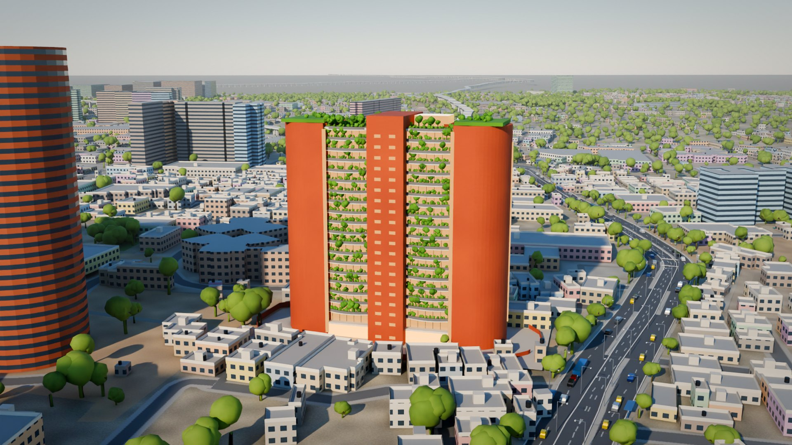

Total Environment · Hoodi, Whitefield
Opening drone shot: work in progress
A 12 second slow push from the east-south-east. The camera comes out of the clouds about 560 m from the Workcations tower and glides in to about 280 m, with Whitefield Road (ITPL Main Road) leading in on the right.
Preview stills · final render at 2560 × 1440 in progress





What is modelled around the tower
- Whitefield Road with kerbs, lane markings, street lights and moving cars, autos and buses
- The two Rajapalya bus stops with shelters
- The site's compound wall and gate on Whitefield Road
- The small temple to the west, the warehouse to the north-west, the apartments with a pool to the west-south-west
- The Hoodi Rajapalya houses to the east, with rooftop parapets, stair rooms and water tanks
- The Rhapsody township and construction site to the south
The tower
- Rounded brick end towers, a central brick spine, glazed bays with balconies that bow outwards and are planted
- Ground plus 19 floors, about 76 m, a roof garden and lit shops at the base
- Modelled from Total Environment's render and the sales model video, on the footprint from the map data
Built from open map data (Overture Maps, Copernicus elevation) and rendered in Blender. No satellite or Google imagery is used. Stills 1 to 3 are frames of the final render; stills 4 and 5 are lighter preview renders of the same camera; the final film is rendered at 2560 × 1440. The look is a clean architectural model, not a photograph.